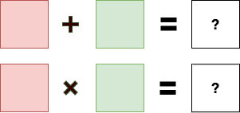

Learn you Galois Fields for Great Good (00)
Introduction
This is the introduction to a series on Abstract Algebra. In particular, our focus will be on Galois Fields (also known as Finite Fields) and their applications in Computer Science. This is a project I've been excited about for many years now, but have been too busy to dedicate the adequate effort to meet my perfectionism standards (yay perfectionism!).
Backstory
Many moons back I was self-learning Galois Fields for some erasure coding theory applications. I was quite disappointed with the lack of accessible resources for computer scientists. Many resources assumed either:
- Its beyond your skill level so let's oversimplify (
"it's hard, don't worry about it"), or - You had prior Pure Math studies in Abstract Algebra (
"it's easy, just use jargon jargon jargon")
Unfortunately, Abstract Algebra is not standard subject matter in most computer science curriculums. Often computer science mathematics start and end with Discrete Math. If you're lucky, maybe you've also been exposed to Linear Algebra.
So, ultimately, I ended up self-learning Abstract Algebra from a pure math textbook. But for the great majority of computer scientists, there has to be a better way. This series intends to fill this gap. This is the gentle step-by-step approach with applications implemented with actual code. It's the intro I wanted when I was starting out.
What is this subject?
Abstract algebra is a beautiful subject. It's the idea that the numbers you're familiar with don't matter. The numbers are just arbitrary labels. What matters is the relationships they have with other numbers when you add or multiply them. If the numbers don't matter, then we can swap those labels for different labels and all the normal math rules will still work.
For example, we could create an algebra that allows us to add or multiply colors:

And this is what makes the subject abstract and confusing. How can you just say that numbers don't matter? It doesn't make sense.
And even so, why would we want to study this? Why would a computer scientist care?
Well, we use computer algorithms to manipulate data. We encode/decode it, we encrypt/decrypt it, we detect corruption, etc. Wouldn't it be great if we could use normal math to do those things? Wouldn't it be great if would could add or multiply an 8-bit byte by an 8-bit byte and get another 8-bit byte? And if we could do that, could we also do Linear Algebra over Data? Yes, yes, and more yes. This is why studying Abstract Algebra is worthwhile.
(Hint: Neither 263 nor 9282 are answers, they are not 8-bit numbers)
You can also make quirky blog posts that make your friends think you've gone crazy, like milk and cookies ü•õ üç™ üòä
Applications
The applications and algorithms are staggering. You interact with implementations of abstract algebra everyday: CRC, AES Encryption, Elliptic-Curve Cryptography, Reed-Solomon, Advanced Erasure Codes, Data Hashing/Fingerprinting, Zero-Knowledge Proofs, etc.
Having a solid-background in Galois Fields and Abstract Algebra is a prerequisite for understanding these applications.
Approach: Step-by-step, Active Learning, and Literate Programming
In this series, we will start from the very basics of theory and build up step-by-step to interesting applications such as Reed-Solomon, AES, etc. As such, the material will be very cumulative. Many exercises will be included to aid understanding. Each section will build gradually, but will assume mastery of the previous section. Active learning is strongly encouraged. We will expect that readers are putting in adequate effort to grok the abstract concepts.
We won't assume too much mathematical background beyond high-school level algebra. However, in some applications (for example: Reed-Solomon), familiarity with Linear Algebra will be required. We won't explain Linear Algebra since great resources already exist here. You are encouraged to supplement as needed.
We will be including code in a Literate Programming style where appropriate. For example, to aid understanding, we will build some interactive command-line tools that allow you to play around with various theoretical concepts in practice. All code will be the Rust Programming Language, but advanced features will be intentionally avoided so that the code will be readable by most experienced computer programmers.
The main goal of this series is understandability and education. As such, the implementations will not be optimal. We will forgo nearly all optimizations you'd see in a production quality implementation: lookup-tables, vectorized instructions, clever representations, computer architecture optimizations, etc. It's possible that later posts in the series will discuss optimizations, but this is not a primary goal. At the end, we hope these implementations will serve as good reference implementations. This can have it's own merit since highly optimized algorithms are often difficult to read and understand.
For active learning, I strongly encourage you to do your own implementations and to play around with the command-line tools while reading. If you'd like to open-source your implementations, I'm more than happy to link them here:
- Original: xorvoid (Rust): here
Planning is Essential, Plans are Worthless
Here's the rough plan. We will see how it actually goes:
- 01: Group Theory
- 02: Field Theory
- 03: Implementing GF(p)
- 04: Polynomial Arithmetic
- 05: Polynomial Fields GF(p^k)
- 06: Implementing GF(p^k)
- 07: Computer Science Fields GF(2^k)
- 08: Extended Euclidean Algorithm
- 09: Cyclic Redundancy Check (CRC)
- 10: Reed-Solomon Erasure Coding
- 11: AES (Rijndael) Encryption
- ... And More ...
Other possible advanced subjects:
- Rabin Fingerprinting
- Elliptic Curves
- Bit-matrix Representations
- Fast Multiplication with FFTs
- Vectorization Implementation Techniques
The first few sections are theory. There's not much coding in these sections, but they are very important for success later in the series. Don't skip them.
Let's get started!